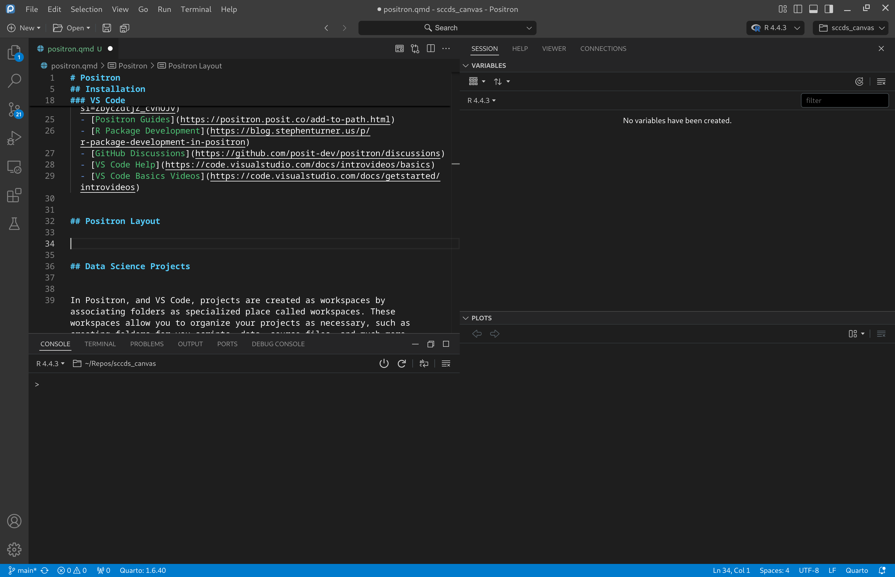
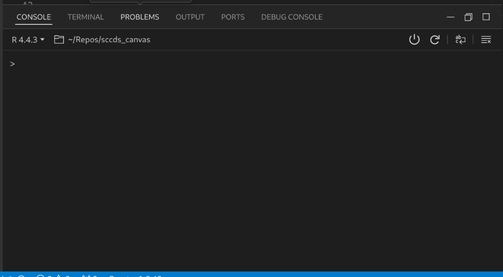
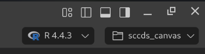
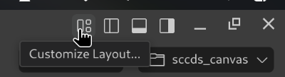
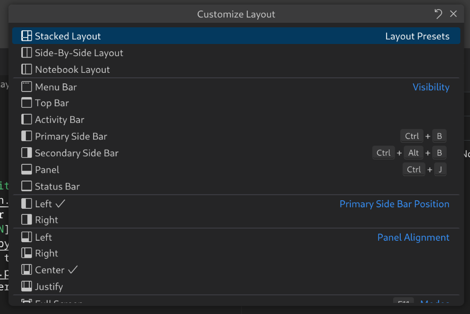
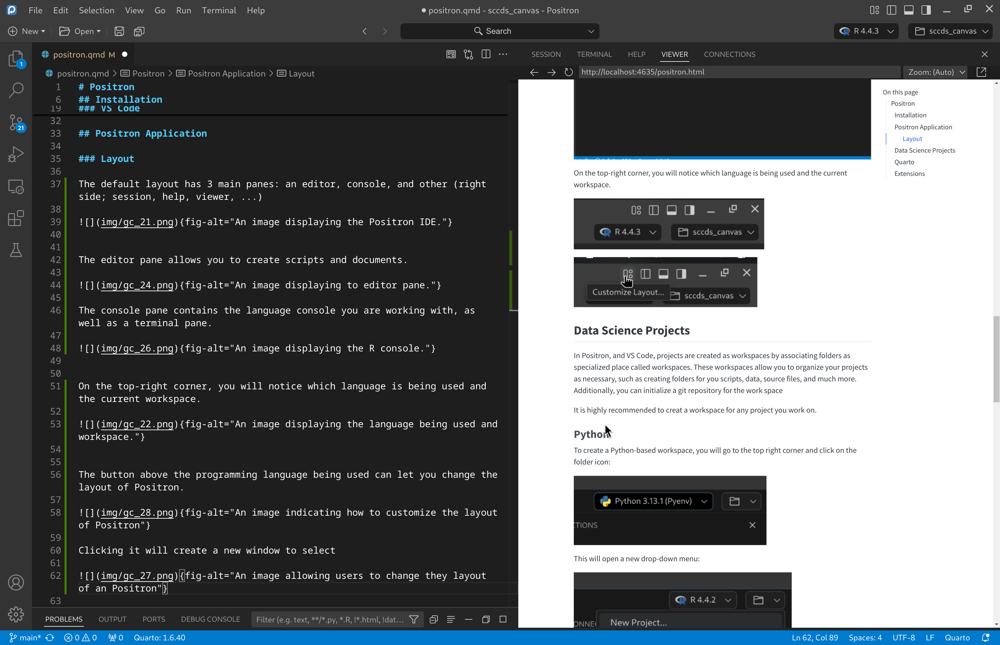

reticulate::py_install("polars")16 Positron
Positron is the next IDE developed by Posit, the creators of RStudio to deploy data science projects.
16.1 Installation
To install Positron, go to their website and click on get started. Afterwards, follow the instructions to prepare your computer to use positron. This involves either installing R from CRAN or Python via pyenv (Windows). Once that is done, you can navigate to their download page, where you can download the appropriate file. Afterwards, run the installer and follow the prompts.
After you install Positron, it should look like this:

Note that I changed the appearance of Positron to dark theme. Here is Positron when Python is being utilized:

VS Code
Positron is based on Microsoft’s Code OSS platform, which makes it look very similar to visual Studio Code. It is an IDE similar to RStudio, but it is program agnostic. Additionally, it is capable to be more customizable with the use of extensions provided by Open VSX; however, you may install extensions from VS Code as well.
To learn more about Positron and VS Code, visit the following pages:
16.2 Positron Application
Layout
The default layout has 3 main panes: an editor, console, and other (right side; session, help, viewer, …)

The editor pane allows you to create scripts and documents.

The console pane contains the language console you are working with, as well as a terminal pane.

On the top-right corner, you will notice which language is being used and the current workspace.

The button above the programming language being used can let you change the layout of Positron.

Clicking it will create a new window to select a desired layout.

Clicking the “Side-By-Side Layout” will create layout like below.

16.3 Data Science Projects
In Positron, and VS Code, projects are created as workspaces by associating folders as specialized place called workspaces. These workspaces allow you to organize your projects as necessary, such as creating folders for you scripts, data, source files, and much more. Additionally, you can initialize a git repository for the work space
It is highly recommended to creat a workspace for any project you work on.
Python
To create a Python-based workspace, you will go to the top right corner and click on the folder icon:

This will open a new drop-down menu:

Click on the “New Project…” to begin creating a workspace. This will then create a new window:

Now select the “Python Project” and click “Next”. Afterwards, a new window will popup asking you to create a new folder and where to store it:

Notice that I have the “Initialize project at Git repository”, if you have git installed and plan to use it, it would be a good idea to initialize it. Then, a new window will popup asking you to create a new Python environment:

I recommend doing so. This will create a new environment that I believe will only be used for the project. Note, you will need to install the python modules again for this new environment. A final window will popup:

You should click “New Window” for now. This will open a new session of Positron. It may take a few minutes to create the python environment, but it will work after.
16.4 Quarto
When working in Quarto, the python chunks can send code to a console to be executed. The console is set up to use python via pyenv. However, whenever the quarto document gets an R chunk, the console will immediately change to an R console, and all the python chunks will be sent to the R console and evaluated with reticulate. This would be okay, but reticulate may not have all the python packages that pyenv has. I have tried searching for a way to have reticulate communicate with the pyenv installation, but I haven’t found anything thus far. Therefore, I recommend installing python modules via reticulate.
You can install a python module with: